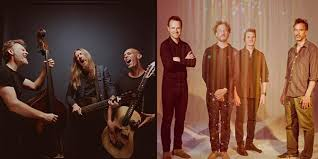

Guster: The Greatest Band of All Time

Tour
- MAY 21, 2022
House of Blues Boston
Boston, MA
w/ Ben Kweller -- Rescheduled from Jan 15. All tickets honored.
SOLD OUT
- MAY 22, 2022
House of Blues Boston
Boston, MA
w/ Ben Kweller -- Rescheduled from Jan 16. All tickets honored.
- JUN 9, 2022
Maymont
Richmond, VA
w/ The Wood Brothers and David Wax Museum
- JUN 10, 2022
The Freeman Stage at Bayside
Selbyville, DE
w/ The Wood Brothers and David Wax Museum
- JUN 11, 2022
Midway Lawn at Champlain Valley Expo
Essex, VT
w/ The Wood Brothers and David Wax Museum
- JUN 12, 2022
Beak & Skiff Apple Orchards
LaFayette, NY
w/ The Wood Brothers and David Wax Museum
- JUN 14, 2022
Rose Music Center at The Heights
Huber Heights, OH
w/ The Wood Brothers and David Wax Museum
- JUN 16, 2022
Rock The Ruins at The Vogue Outdoors
Indianapolis, IN
w/ The Wood Brothers and David Wax Museum
- JUN 17, 2022
Andrew J Brady ICON Music Center
Cincinnati, OH
w/ The Wood Brothers and David Wax Museum
- JUN 18, 2022
Winnetka Music Festival
Winnetka, IL
w/ The Record Company
- JUN 24, 2022
Green River Festival
Greenfield, MA
- JUL 3, 2022
Bank of NH Pavilion
Gilford, NH
Supporting Nathaniel Rateliff & The Night Sweats
- JUL 6, 2022
Schermerhorn Symphony Center
Nashville, TN
w/ The Nashville Symphony Orchestra
- JUL 9, 2022
Summerfest
Milwaukee, WI
Johnson Controls World Stage
- JUL 30, 2022
Deer Valley Amphitheater
Park City, UT
w/ Utah Symphony
- AUG 10, 2022
The Wellmont Theater
Montclair, NJ
w/ Laura Stevenson
- AUG 12, 2022
Guster On The Ocean - State Theatre
Portland, ME
Sold Out w/ Josh Ritter (solo)
- AUG 13, 2022
Guster On The Ocean - Thompson's Point
Portland, ME
w/ Shovels & Rope, Amythyst Kiah, Darlingside, Pete Kilpatrick
- AUG 14, 2022
Camp Guster at Camp Winnebago
Fayette, ME
- AUG 26, 2022 - AUG 28, 2022
Beach Road Weekend
Martha's Vineyard
- AUG 28, 2022
The Loft
Oak Bluffs, MA